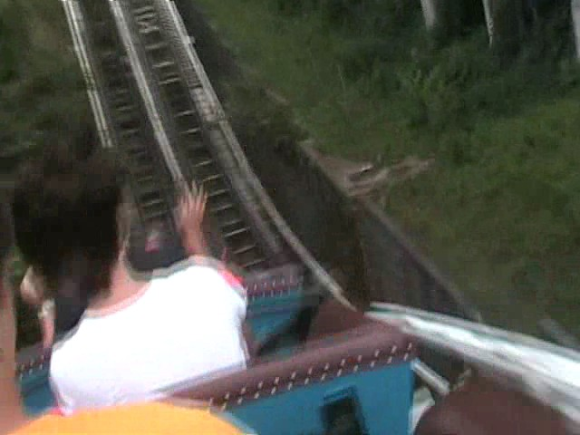
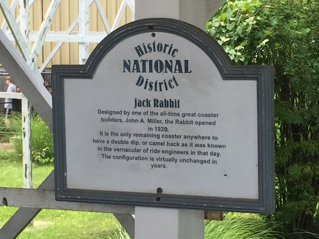
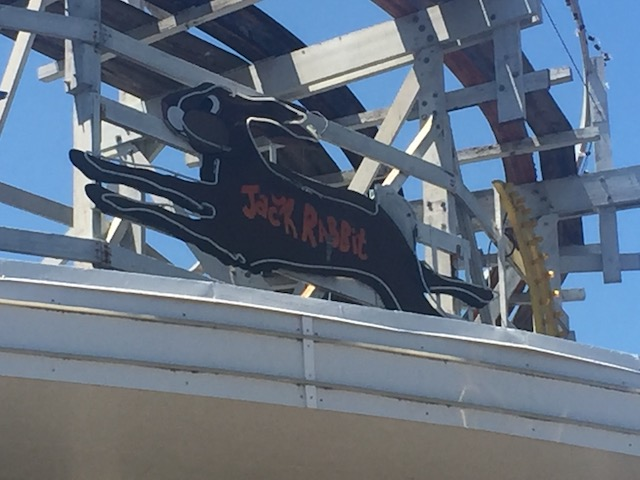
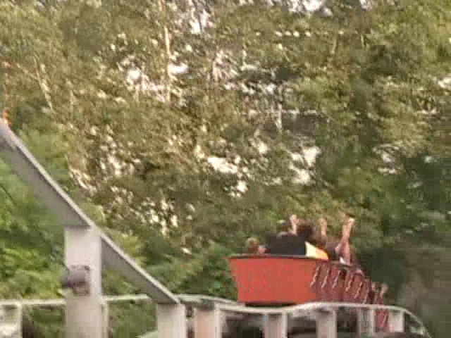

| |
Jackrabbit Review

We're here at Kennywood. Today's ride we'll be reviewing is Jackrabbit. This is a very special coaster for many different reasons. First of all, this is very old as it was built in the 1920s. So yeah. This sucker has been around for quite some time. And second of all, this ride is home to the Double Dip, which is one of the most powerful moments of airtime on any coaster. Yeah, it's pretty insane. Anyways, let's take a spin. We hop in the cars and buckle the seatbelts. Now off we go. We roll through a big swooping turn. As we are showed off through this big turn, we say hello to everyone in line before we eventually head towards the first drop. That's right. The first drop is before the lifthill. It's a popular theme at Kennywood. This first drop isn't anything special nor is that big. But it is fun. We do experience some shuffling at the bottom though before we rise up the hill. This then allows us to "TAKE THE TUNNEL!!!" The tunnel itself is not that interesting. In fact, it starts out with some trims. We then just grace through a turn in this tunnel. All alone in the dark, all you can say to yourself is "Where is that god damn double dip?" Soon after you say, we're back in daylight, waiting for that double dip. We don't get the double dip, but we do get another small drop which is a nice little suprise. We then rise up a hill that just turns into the lifthill. This is another popular theme at Kennywood. While climbing up the lifthill, if we look to our left, we see it waiting for us. The Double Dip. After going up the lifthill, we head into a turnaround. Our minds are set on the double dip. We are ready for it. The first dip of the double dip. We're actually moving pretty fast. But just wait, there's another drop right there. Then it happens. The EJECTOR AIR!!!! Actually, the airtime on Jackrabbit, while as equally insane as on Coaster and Cyclops, it's actually different from them. Normally, you fly out of your seat and back into it with Ejector Air. But on Jackrabbit, you don't get lifted out of your seat, your seat simply drops before you, leaving you floating in mid air as if you didn't move for a split second, but since we are attached to the train via seatbelt, we are then violently yanked back into the seat, creating the amazing pull down that is so highly loved in ejector air. We then rise up another hill before going through another turnaround. While it doesn't have many laterals, who cares. We just experienced the Double Dip. =) After this turnaround, we head down another drop. While it's not insane, it still is fun. This then lets us rise up into the brake run. So yeah, you've heard everyone talk about how great the Double Dip is, and it lives up to the hype. But the rest of the ride isn't half bad either. I'd TOTALLY recommend riding this if you're at Kennywood. It's a fun little ride with a really powerful pop of Ejector Air.
8/10
Location: Kennywood
Opened: 1920
Built by: Charlie Mach
Last Ridden: June 23, 2021
Jackrabbit Photos









Home
|